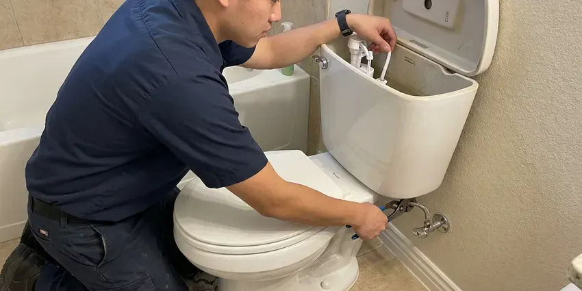
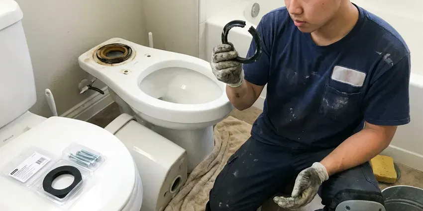

Shower Repair in Royal Oak, MI
Cold blasts when someone flushes, a head that sprays sideways, a drain that holds water. Our plumbers in Royal Oak, MI handle every one of those.
- Prompt Shower Repair
- Licensed and Insured
- Moen and Delta Valves Repaired
- Licensed Plumbers

A Shower That Shuts Off All the Way, Royal Oak, MI
Same-day repairs are often possible when we have your cartridge.
Shower Leak Repair for Royal Oak, MI Homes
CHV Plumbing handles shower repairs in homes all over Michigan. Drips after shutoff and handles that bind are the calls we get most, followed by water that drifts cold halfway through. None of them needs new tile.
Our expertise includes:
- Pan and Wall Leak Detection With Moisture Meters
- Shower Drain Augering and Repair
- Hot and Cold Balance Repair

Additional Bathroom Plumbing Services in Royal Oak, MI
From toilets to showers, our bathroom plumbing team in Royal Oak, MI repairs, installs, and replaces every fixture with clean, code-compliant work.


Local toilet repair by CHV Plumbing, Royal Oak

Professional toilet bowl replacement, Royal Oak


Customers
Why Choose CHV Plumbing for Shower Repair in Royal Oak, MI?
Shower leaks hide well. By the time a stain shows on the ceiling below, water has usually been soaking the subfloor or the drywall for weeks, so we confirm the source with a meter before opening anything. Openings stay small.
- Hidden Leak Checks, Moisture testing finds leaks behind tile before they spread.
- Local Experience, We see the same valves in Michigan homes every week.
- Scald Protection, We set the limit stop so hot water stays at a safe level.
Citywide Coverage
Every neighborhood in Royal Oak is on our route, from older streets with original two-handle valves to new builds with thermostatic showers. We schedule shower repairs most weekdays, often the same day you call. Early calls get the best odds.
Experienced Team
Every plumber on our crew is licensed. Before they take calls alone, new plumbers ride along and learn to identify valves and spot old leaks. That takes time.
Safety-First Approach
Before we leave, every repair gets a leak check. The shower runs on both sides while we check the trim, arm and drain for any moisture. No moisture, then we pack up.
Trusted Certified Royal Oak Plumbing Services Professionals
At CHV Plumbing, we are proud to offer certified plumbing services throughout Royal Oak, MI. Credentials matter in this trade. Every repair, install and maintenance visit follows strict safety and quality rules, and the plumbers doing the work carry recognized industry credentials.
Call Us Now PHCC Plumbing Contractor Recognition
PHCC Plumbing Contractor Recognition Better Business Bureau (BBB) Accreditation
Better Business Bureau (BBB) Accreditation Angi Certified Pro
Angi Certified Pro ISO 9001 Quality Management Certification
ISO 9001 Quality Management CertificationShower Repairs We Handle in Royal Oak, MI
Commercial Shower Repair in Royal Oak, MI
Gyms and apartment buildings run showers dozens of times a day. Commercial valves get heavy-duty cartridges, and we schedule around your busy hours so the showers stay open when people need them. Vandal-resistant heads are available. Every repair is set to scald-limit code.

Shower Valve Replacement in Royal Oak
Temperature that swings or a handle that fights you points to the valve. When the body is corroded or the brand stopped making cartridges for it, we replace the valve, usually through a small access panel behind the shower wall so the tile stays put. New valves include pressure balancing. You can step up to a thermostatic valve for tighter control.
Mixing Valve Repair in Royal Oak
Mixing valves blend hot and cold inside the wall. A sticking cartridge or spool shows up as temperature that drifts or a handle that has to go much farther than it used to. We replace the cartridge. If the valve is too old for parts, we talk through a replacement valve and what it means for the tile.
Showerhead and Arm Leak Repair in Royal Oak
Shower arms leak at the threads more than people realize. Water that seeps from the arm connection runs back along the pipe into the wall, and you only find out when the paint on the other side starts to bubble. We reseal the threads. Handheld hoses and slide bars can go in during the same visit.
Hot Water Pressure Problems in Royal Oak, MI
Weak hot water with strong cold usually rules out the showerhead. The problem is on the hot side, either sediment in the water heater outlet, a partly closed valve at the heater or a cartridge whose hot port is packed with scale. We test both sides. If the sinks have good hot pressure and the shower does not, the cartridge is the first suspect.
Showerhead Repair and Replacement in Royal Oak
Showerheads clog from the inside out. Scale builds behind the face plate and in the flow restrictor, so the spray goes uneven, shoots sideways or drops to a trickle even when the valve is wide open. Soaking helps sometimes. Otherwise we put on a new head with rubber nozzles that rub clean with your thumb.
Tub and Shower Combo Repair in Royal Oak, MI
Tub and shower combos share one valve, one drain and a diverter between them. That means a worn diverter steals pressure from the head, a clogged tub drain slows the shower and a leaky valve shows up at both the spout and the head. Each part gets tested. We also check the overflow gasket, a frequent hidden leak.

Clogged Shower Drain Clearing in Royal Oak, MI
Hair and soap scum cause nearly every slow shower drain. A hand auger through the strainer clears most of them, and a drum machine handles clogs that have moved past the trap. Drain cleaner usually misses the clog. We recommend a hair catcher once it is clear.
Shower Plumbers Near Me in Royal Oak, MI
Homes around Royal Oak have everything from old three-handle valves to new thermostatic systems. We carry stems and seats for the old ones and cartridges for the new ones, so most repairs do not wait on a parts order. Odd valves take a day.
On the day of the repair, a drop cloth goes in the tub and a towel over the drain so nothing small disappears. You get a flat price after we look, and every shower repair is backed by our workmanship guarantee. We clean up before we go.
CHV Plumbing at a Glance
- Licensed and insured plumbers serving Royal Oak, MI
- 24/7 emergency service with same-day scheduling
- Upfront, flat-rate pricing before work begins
- 4.9-star rated by 670+ Michigan customers
Royal Oak Map
Royal Oak Information
- Population
- 57,452
- Area codes
- 248/947/586
- Service area
- Royal Oak and towns within a 40 mile drive
- Nearby
- Troy, Southfield, Warren, Sterling Heights
Homes around Royal Oak on private wells usually benefit from a water test before picking a softener, since mineral levels vary widely. Freeze and thaw cycles shift the soil around buried pipes, which can crack older clay and cast iron sewer laterals. In a shower, that means worn cartridges and drain joints that shift in Royal Oak, MI homes.
Expert Services
Call CHV Plumbing for reliable plumbing work done by licensed pros in Royal Oak, MI.
Our Specialized Plumbing Services in Royal Oak, MI
At CHV Plumbing, you get every kind of plumbing service from one company across Royal Oak, MI. From leak detection to full system installs, our team works fast and charges fair prices on homes and commercial properties alike. Take a look at our core services below:


How a Shower Repair Goes in Royal Oak, MI
Three steps, and most repairs take an hour or two.
Describe the Problem
Reach us at (810) 380-5918 with the brand on the handle. We check which cartridge it takes.
Diagnose and Quote
The plumber pulls the trim and reads the cartridge, then quotes a flat price.
Fix It Right
We install genuine parts, test the balance and set the scald limit, and clean up.
Frequently Asked Questions About Shower Repair in Royal Oak
Most shower repairs, like a cartridge or diverter, cost $150 to $375. When the wall has to be opened for a valve swap, expect $450 to $1,200 based on the valve and the access. Pan repairs cost more.
We do. The parts have warranties and our labor is guaranteed. If the same problem comes back, we return to fix it.
We repair Moen, Delta, Kohler, Pfister, American Standard, Symmons and many others. We carry the usual cartridges.
Loose valve connections and failed grout cause most of them. Cracked pans, worn O-rings behind the trim and a loose shower arm connection can all let water into the wall cavity without showing on the tile side. A moisture meter shows us where. Then we fix the source with as small an opening as possible.
Musty smells and loose tile are the quiet ones. Drips, weak spray and temperature that drifts are the obvious ones. Each one is worth a look.
One to three hours covers most. Cartridges and clogs are about an hour, and a valve that has to be reached through the wall can take most of a morning. We tell you up front.
Worn cartridge or seals, almost always. Hard water speeds that wear, which is why drips are so common, and a new cartridge with fresh silicone grease usually stops it for years.
Moen, Delta, Kohler, American Standard, Pfister and Grohe are most of what we see. Symmons and Sterling show up too, along with older brands whose parts take some hunting. Odd parts come next day.
Hear From Customers Who Hired Our Plumbing Experts

Daniel K.
A pipe burst in the garage ceiling at 11 at night. Someone answered on the second ring, and the plumber was in my driveway about fifty minutes later. He shut off the main, cut out the split section, and had water back on before 2 am.
Emergency Plumbing · Sterling Heights, MI
Lisa C.
Water was pouring out from under the washing machine on a holiday weekend. CHV Plumbing talked me through closing the valves over the phone and had a plumber at the house within ninety minutes. It was a burst fill hose.
Emergency Plumbing · Detroit, MI
Monica A.
Our water bill nearly doubled in one month with no change in how we used water. The tech checked the meter, heard the leak under the hallway with his equipment, and opened a hole about a foot square. Fixed the same day.
Slab Leak Repair · Sterling Heights, MIMegan L.
Our upstairs tub drained so slowly that every shower turned into a bath. CHV Plumbing pulled a wad of hair out of the stopper and then snaked the line past the trap. Three months later it still drains fast.
Drain Cleaning · Royal Oak, MI
Robert G.
The camera showed a full break in our clay sewer line near the street. CHV Plumbing replaced it with a trenchless pipe burst, so the only digging was two small pits in the yard. They let us watch the footage before and after.
Sewer Line Replacement · Troy, MISofia M.
Two new toilets went in during one visit. The tech set them on new wax rings and swapped the old supply lines. He also noticed our bathroom faucet dripping and replaced the cartridge while he was there. No mess left behind.
Toilet Installation · Sterling Heights, MI